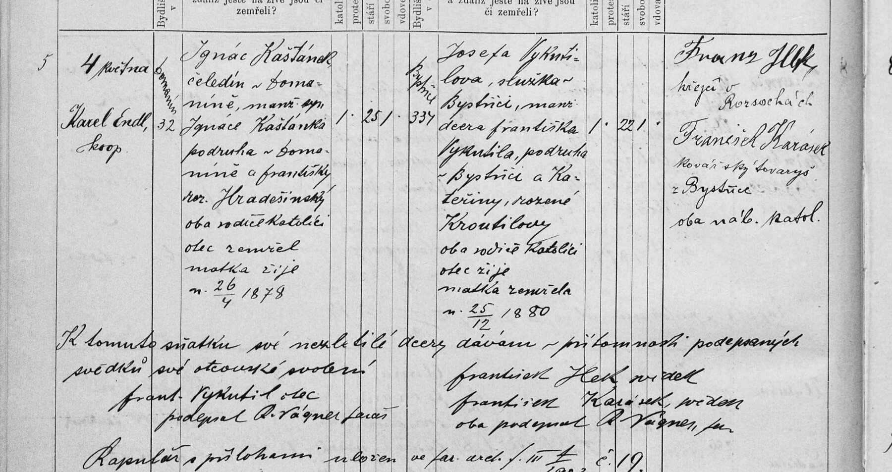

Zápisy z matrik · sňatek
Sňatek Ignáce Kaštánka a Josefy Vykutilové
Ignác Kaštánek (25 l., * 26. 4. 1878), čeledín v Domaníně čp. 32, syn Ignáce Kaštánka, podruha v Domaníně (zemřelý), a Františky roz. Hradešínské × Josefa Vykutilová (22 l., * 25. 12. 1880), služka v Bystřici čp. 337, dcera Františka Vykutila, podruha v Bystřici, a Kateřiny roz. Kroutilové (zemřelé). Otec nezletilé nevěsty dal svolení. Oddával kooperátor Karel Endl.
| Datum | 4. 5. 1903 |
|---|---|
| Archiv | Moravský zemský archiv v Brně – Sbírka matrik (E 67), fara Bystřice nad Pernštejnem |
| Svazek | O Bystřice nad Pernštejnem 1895–1942, kniha č. 15461 (Bystřice sn. 2–176, Dvořiště sn. 177–190) |
| Snímek | 34 – otevřít na portálu Acta Publica |
| Týká se | Ignác Kaštánek1878–1952, Josefa Vykutilová* 1880, Ignác Kaštánek, Františka Hradešínská, František Vykutil, Kateřina Kroutilová |

Červeně je označené místo, ze kterého čteme. Kliknutím otevřete výřez v plném rozlišení.
Přepis originálu
[Č.] 5 [Den oddavek a oddával] 4. května [1903]; Karel Endl, kooperátor [Ženich – bydliště, č. d.] Domanín 32 [Ženich] Ignác Kaštánek, čeledín v Domaníně, manž. syn Ignáce Kaštánka, podruha v Domaníně, a Františky roz. Hradešínský, oba rodiče katolíci, otec zemřel, matka žije; n. 26/4 1878 – katol., 25 let, svobodný [Nevěsta – bydliště, č. d.] Bystřice 337 [Nevěsta] Josefa Vykutilova, služka v Bystřici, manž. dcera Františka Vykutila, podruha v Bystřici, a Kateřiny rozené Kroutilovy, oba rodiče katolíci, otec žije, matka zemřela; n. 25/12 1880 – katol., 22 let, svobodná [Svědci] Franz Illek (?), krejčí v Rozsochách; František Karásek, kovářský tovaryš z Bystřice; oba nábož. katol. [Poznámka] K tomuto sňatku své nezletilé dcery dávám v přítomnosti podepsaných svědků své otcovské svolení. Frant. Vykutil, otec; podepsal R. Vágner, farář. František Hek (?) svědek, František Karásek svědek, oba podepsal R. Vágner, far. Rapulář s přílohami uložen ve far. arch. f. III ... č. 19
Překlad
4. května 1903 oddal kooperátor Karel Endl v Bystřici nad Pernštejnem tyto snoubence: Ženich: Ignác Kaštánek, čeledín v Domaníně čp. 32, narozen 26. 4. 1878, 25 let, svobodný, katolík; syn Ignáce Kaštánka, podruha v Domaníně (již zemřelého), a Františky roz. Hradešínské (žijící). Nevěsta: Josefa Vykutilová, služka v Bystřici čp. 337, narozena 25. 12. 1880, 22 let, svobodná, katolička; dcera Františka Vykutila, podruha v Bystřici (žijícího), a Kateřiny roz. Kroutilové (již zemřelé). Svědci: Franz Illek (?), krejčí v Rozsochách, a František Karásek, kovářský tovaryš z Bystřice. Protože nevěsta byla nezletilá, dal její otec František Vykutil ke sňatku před svědky své svolení.
Nejistá čtení jsou označená (?), nečitelná místa […]. Přepis si můžete ověřit na výřezu výše.